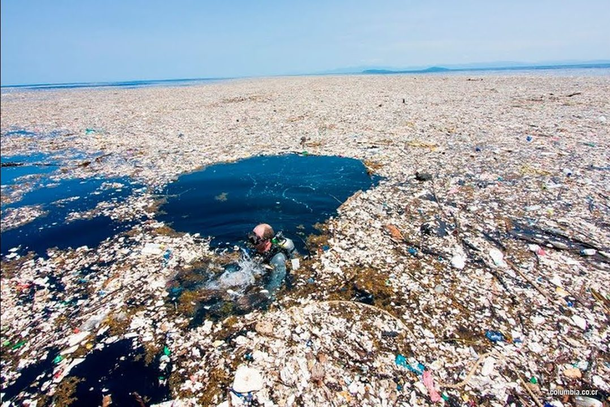

Gran Parche de Basura del Pacífico
Una enorme acumulación de residuos plásticos flotando entre Hawai y California, conocida como la “isla de plástico”, formada por corrientes oceánicas que concentran millones de toneladas de basura.
Una enorme acumulación de residuos plásticos flotando entre Hawai y California, conocida como la “isla de plástico”, formada por corrientes oceánicas que concentran millones de toneladas de basura.
Los incendios en la selva amazónica, provocados por la deforestación, actividades agrícolas y el cambio climático, queman grandes extensiones de bosque cada año, afectando a uno de los ecosistemas más importantes del planeta.
La ola de calor y la sequía en España (2022-2023), agravadas por el cambio climático, provocaron pérdida de agua, daños graves en la agricultura e incendios, afectando la salud, la economía y la disponibilidad de recursos naturales.
La desaparición de abejas y otros polinizadores en Europa, causada por pesticidas, cambio climático y pérdida de hábitats, pone en riesgo la biodiversidad y la agricultura de la que depende nuestra alimentación y economía.